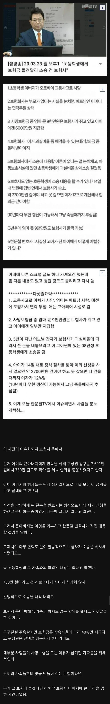

전설의 악마 보험사
댓글
내가 적은 댓글에 이미 답이 다 나와있음
1. 의도적으로 어떻게 후견인이 모르게 소송을 하는데?
아이의 거주지로 통지 보냈는데, 그 사실을 후견인이 모를 수가 있어? 어떻게?
아이를 고아원에 두고 말로만 후견인이라고 하면서 선지급된 보상금 홀랑 다 써버린 경우가 아니라면 일어날 수 없는 일이지? 이게 무슨 후견인이야.
그리고, 미성년자의 소송은 '반드시' 법정대리인이 있어야 하는데 어떻게 후견인 몰래 소송이 가능한데?
만약 그걸 후견인이 몰랐다면, 법정 대리인 될 자격도 없거나, 아님 법정대리인 될생각도 없으면서 입으로만
후견인이라고 떠드는 사람이겠지.
2. 도대체 무슨 법의 허점?
무면허 무보험으로 자기 과실로 사고내고 죽은 사람의 유족에게
"아직 과실이 명확하지 않으니 일단은 선지급해줄게요. 근데 과실에 따라서 반환해야 할수 있어요" 하고
보험금 선지급해 줬는데, 알고보니 애아빠 과실이라서 그 돈은 반환하게 됐음.
근데 그 돈을 홀라당 먼저 다 써버리고 '없는데?' 라고 하면 이건 돈 쓴 사람의 잘못 아냐?
이걸 돌려받을려고하는게 '돈을 뜯으려' 하는 일이야? 왜? 그럼 이 돈은 그냥 떼이는 게 맞는거야?
그리고 연대채무는 채무자 중 아무한테나 소송걸어도 상관없고, 보험금 지급받은 두 사람 중 엄마는 행방불명 상태여서 소송 걸어봤자 시작될 수도 없으니 한국에 있는 나머지 한 명인 애한테 건 거 아냐.
다시 말하지만 엄마가 지급받은 보험금은 이미 소멸시효가 지나서 보험사가 그냥 꿀꺽해도 되는 돈인데도 안 그러고 계속 걸어두고 있었다. 나중에 법원 거쳐서 이 돈 환수해도 된다고 뜨면 당연히 애는 본인이 받은 그 40% 안에서만 반환의무가 생기는거임. 엄마쪽 채무는 엄마 보험금으로 회수됐으니까.
내 댓글에 다 나와있는 내용인데 읽지도 않고 이러냐
1. 소송 대상을 12살 어린애가 아닌 후견인으로 지정했으면 됐음
그리고 강조까지 한 '반드시' 법정대리인이 있어야 한다는 미성년자 소송은 미성년자 혼자 소송을 하는 행위를 말하는거지 미성년자를 피고로 지정하는 것 자체를 막는게 아님. 그리고 이 건은 실제로 법원이 12세 아이에게 이행권고 결정까지 했음
보험금을 '홀랑' 다 써버렸다고 표현하는 부분도 보험금 대부분은 아이의 정신과 치료비와 보육원 생활비로 사용됨
> 마치 후견인이 선지급금된 보험금을 '홀랑' 다 써버렸다는 등 사실과는 다른 내용으로 후견인 모욕
>> 법적으로는 어머니가 있는 상태였기 때문에 보육시설 생활료를 국가에서 보조받을 수도 없었음
2. 너의 뇌피셜로 '애는 본인이 받은 그 40% 안에서만 반환 의무가 생기는거임. 엄마쪽 채무는 엄마 보험금으로 회수됐으니까' 라고 했는데 실제로 구상금 청구액은 아이가 받은 40%의 비율로 계산한 1076만원 (어머니비율 1614만원)이 아닌 2690만원 전체가 청구됨.
니 댓글 읽지도 않고 그러냐는데 형편없는 댓글 전부 읽어봤고 본인부터 본문내용을 좀 숙지하고 뇌피셜로 반환 의무가 생기느니, 후견인이 돈을 홀랑 다썼냐느니 후견인 자격이 없다느니 고인모욕, 유족모욕 등 좆도안되는 대가리로 팩트체크 안하고 나불대다가 고소쳐맞고 후회하지 말길.
1.
이상한 말을 하는 거 같은데, 미성년자 혼자 소송을 하게 두고 판결을 내릴 수는 없어;; ㅋㅋ 반드시 법정대리인 있어야해
내가 아까부터 얘기했잖아 법정대리인도 없는 미성년자가 어떻게 판결이 나냐고.
근데 갑자기 '피고로 지정하는걸 막는게 아니다' 이 얘기는 왜 나오는거임?
당연히 피고로 지정 가능하지 ㅋㅋㅋ 근데 그렇게 해서 판결이 나올 수가 없다고.
니가 말하는 '당사자능력' 이 원고나 피고가 될 자격이고, 이건 미성년자도 가능함.
근데 답변서를 내거나 변론하는일을 스스로 유효하게 할 능력인 '소송능력' 은 미성년자에게 없다구 ㅋㅋㅋ
그래서 법정대리인을 통해서만 소송을 할 수 있도록 되어 있는거야 (민사소송법 제 55조, 결혼한 경우는 제외)
<제55조(제한능력자의 소송능력)① 미성년자 또는 피성년후견인은 법정대리인에 의해서만 소송행위를 할 수 있다. 다만, 다음 각 호의 경우에는 그러하지 아니하다.
1. 미성년자가 독립하여 법률행위를 할 수 있는 경우
2. 피성년후견인이 「민법」 제10조제2항에 따라 취소할 수 없는 법률행위를 할 수 있는 경우>
민사소송법에 "법정대리인에 의해서만 소송행위를 할 수 있다" 라고 명확하게 나와있다. 이상한 말 그만 해라 좀;;
참고로 민사소송법 62조 보면
-법정대리인이 없거나, 있어도 소송을 대리할 권한이 없는 경우
-행방불명처럼 사실상 또는 법률상 장애로 대리권을 행사할 수 없는 경우
-법정대리인이 불성실하거나 미숙해서 소송 진행이현저히 방해받는 경우
로 이번 사건처럼 부모가 '행방불명처럼 사실상 또는 법률상 장애로 대리권 행사할 수 없는 경우' 도 명확하게 써있다.
2. 아니 왜 이상한 소리 자꾸 하냐? 친권자나 후견인은 법정대리인으로 소송을 대신 수행할 뿐이고, 피고는 애 본인이야. 그래서 애한테 소송을 거는게 맞아;;; 뭘 후견인한테 소송을 건다는거야 ㅋㅋㅋㅋ 이상한 얘기 그만해. 왜 잘 모르면서 그렇게 쎄게 얘기하는거냐? ㅋㅋㅋ 어떻게 후견인한테 소송을 걸어 ㅋㅋㅋㅋ 후견인이 저지른 범죄야?
3. 보험금 당연히 애 생활비로 썼겠지. 근데 '돌려줘야 할 수도 있는 금액' 을 홀랑 써버린 거 자체가 문제라고.
아직 교통사고 과실 비율도 안 나왔고, 돌려줄 수 있단 사실도 통지받았으면서 그걸 대책없이 써버린 거 자체가 무책임한 거라고 ㅋㅋ 생활비로 쓴다고 면책될 수 있는게 아니라. 그게 정당하다고 생각하면 니가 개인적으로 후원해서 생활비 충당해주지 그랬냐? 그리고 후견인이 있는데 애는 왜 보육원에서 자라고 있냐?
4. 당연히 연대채무니까 한 사람에게 전액이 "청구"되어도 되는거지 ㅋㅋㅋ 근데 엄마가 찾아가지도 않고 걸어둔 돈이 수천만원 있는 상황에서, 법원이 "엄마 돈은 그대로 걸어두고 니가 다 내!" 라고 안 한다구요 ㅋㅋ. 그 청구를 받아도 재판이 시작되고 엄마측이 연락두절로 3년이 지난 상황이면, 소송 진행되면서 법원이 환수해도 된다고 판결하고 그러면 그냥 거치되어 있던 엄마 돈은 자연스럽게 환수되고 애는 그 남은 금액만 내도 되는거라구요 ㅋㅋㅋㅋ 이게 이해가 어려움? 진짜 답답하네
5. 내 댓글, 니 댓글 변호사한테 들고가서 법률자문받아서 어느쪽 말이 더 타당한지 내기 한번 고?
변호사 5명 정도한테 자문받고, 다수결로 정해서 덜 지지받은쪽이 자문료 전액 지급하는걸로 어때?
5명 중 1명을 나로 지정한다고 하면 자문료는 안 받을게 ㅋㅋ
그렇게 쌍욕 섞어가면서 자신만만하게 말할 정도면 안 도망갈거라 믿음. 화요일부터 시간 괜찮고 여의도에서 직접 만나서 해도 좋음
뭐야 이거;; 또 반전이네
쟤는 그냥 법률적으로 틀린 소리를 하고 있는거임. 그냥 사실로 틀리면서 뭐가 저렇게 당당한지 모르겠음 ㅋㅋ..
한화가 후견인한테 소송을 걸면 됐다느니 하는 '법률적으로 틀린' 소리 하고 있으면서 나한테 소송 조심하라고 빽빽 소리지르는거 진짜 개웃기네
첨에 사건 보고 시발시발 하다가,
바코드닉이 소수의견 머시기 쓴 글 보고 추천박고 머리가 띵했는데
지금 님 글 보니까 사건의 실체가 퍼즐처럼 짜맞춰집니다.
뭐냐 소름돋는 이 이중 반전은..
영화에서만 보던게 실제 내주변에 실시간으로 일어나고 있구나.
이래서 부처님이 입이 모든 화와 재앙의 근원이라고 입조심 손가락조심하고 걍 중립놓고 살아야하는구나 싶다.
1번은 어떻게 사용됐건 간에 반환하는게 맞는거 아님? 어따 썼는지가 왜 나오는지 모르겠는데
너는 왜 항상 제대로 알지도 못하면서 그러냐
댓글을 보세요 ㅎㅎ
너가 진것같은데
진짜 처음부터 끝까지 다 틀린소리 하는거임 ㅋㅋㅋ
저짓해서 롤팀 스쿼드 맞췄구나
저 얘기 보니까 갑자기 옛날 얘기 떠오르는게, 나 예전에 투자부서 일할 때 피인수대상 보험사 재무 담당자가 ‘저희 회사는 방어율이 높습니다!‘라고 자랑스레 얘기하더라.
방어율이 뭐냐고 물으니까 ’고객이 보험 청구했는데 돈 안 주는거‘라고 함ㅋㅋ
같이 갔던 다른 회사 사람들도 다들 경악해서 매물로 나온 이유가 있구나 하고 투자 안 함ㅋㅋ
ㄹㅇ ㅋㅋ 보험회사 새끼들 정치인들같음
가입할땐 설계사 통해서 온갖 입에 발린소리 존나해주다가
막상 지급해야될때는 절대 안줌. 그래서 정당한 건에 대해선 보험회사 상대로는 개 지랄을 떨어야함
직원 입장에선 자세한 사정은 알빠아니고 걍 사무적으로 처리했겠지 싶음
일하면서 딱한 사정 봐주고 그랬으면 그걸로 본인이 처리할일 늘어나고 그럴테니
걍 뭐 그러다가 대형찐빠 존나 쎄게 나는거지
선동은 쉽고 해명은 어렵다.
키베뜰때는 팩트가 어쩌고 저쩌고 깐깐하게 따지는 사람들이 이런 글에는 그냥 쉽게 선동당하지. 커뮤글은 그냥 보고 지나가야 하는 이유구나
나도 이거 실상 알고나서 한화보험 가입했음
대기업 부모없는 고아 프레임 짜서 한쪽을 악마화 하기 딱좋은 상황이네 어차피 대중은 사실은 중요하지 않으니까
대기업이 어떻게 사건 사고 다 신경 쓰냐고 하지만
14살 어린애가 법적인 대리인 없이 소송에 대해서 신경 쓰는 것보단 잘 할 거 같은데
그리고 이 사건 이후로 많이 바뀌었음
법적 대리인 없는 미성년자는 판결 자체가 안 난다. 무조건 법적 대리인 있어야함.
없으면 법원이 특별대리인 선임해줌
민사소송법 제55조(제한능력자의 소송능력)① 미성년자 또는 피성년후견인은 법정대리인에 의해서만 소송행위를 할 수 있다. 다만, 다음 각 호의 경우에는 그러하지 아니하다.
1. 미성년자가 독립하여 법률행위를 할 수 있는 경우
2. 피성년후견인이 「민법」 제10조제2항에 따라 취소할 수 없는 법률행위를 할 수 있는 경우
② 피한정후견인은 한정후견인의 동의가 필요한 행위에 관하여는 대리권 있는 한정후견인에 의해서만 소송행위를 할 수 있다.
시발 알아보니 소송당한 아이 아버지는 무면허 무보험 ㅋㅋ
보험비 지급한건 사고난 다른 차량 주인이였는데 ㅋㅋㅋㅋ
ㅎㅎ 보험은 걸러야겠군
핵심은 빼먹고 썼네
아이한테 보험금 전액 지급한게 아니고 상속비율에 따라 40%만 지급하고 구상금액은 전액 청구한 것
의도적으로 아이의 후견인이 소송사실을 모르게 한 것
법의 허점을 이용해 어린아이에게 큰 돈을 뜯어내려 한 것
이것때문에 문제가 된건데 이 내용은 어디감? 알바임?